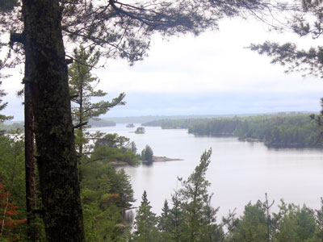
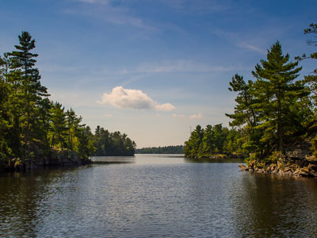
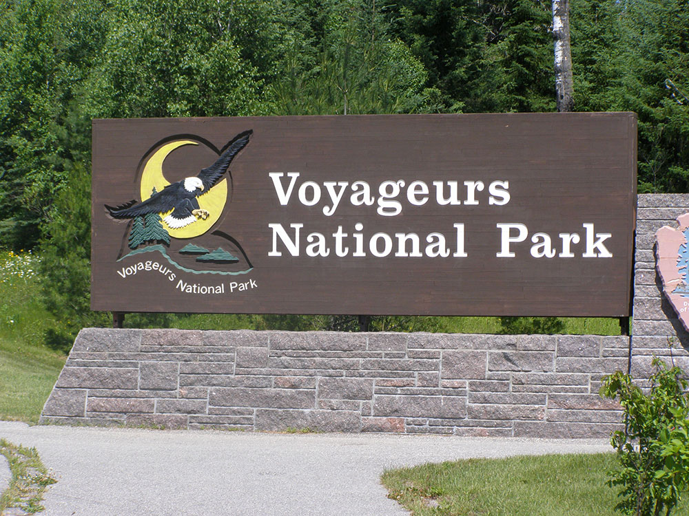
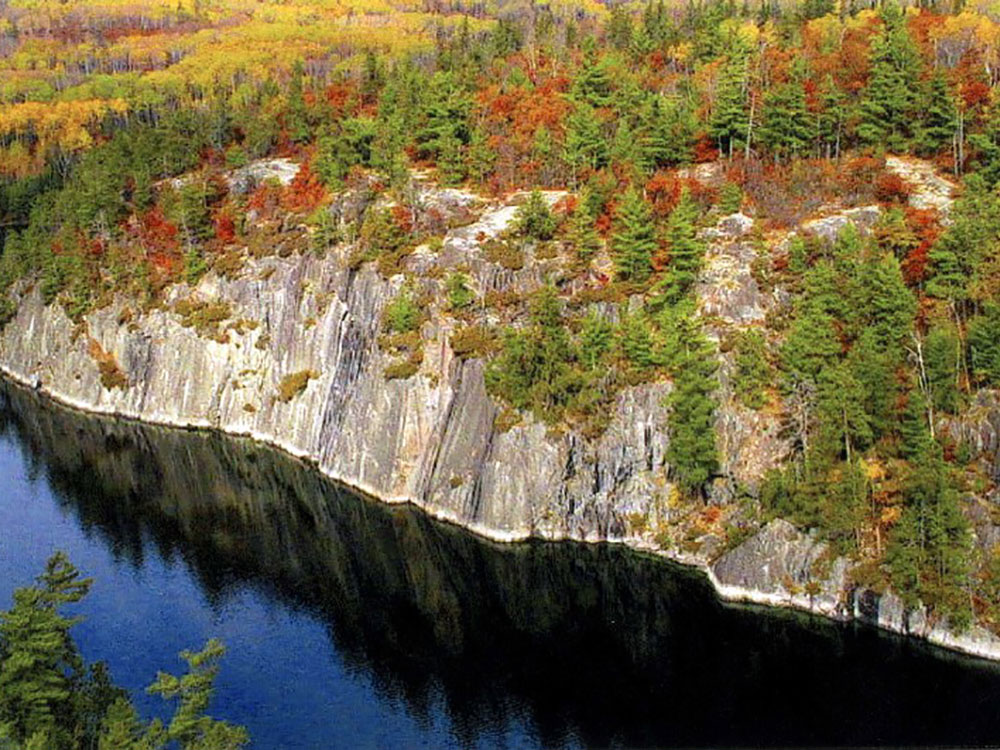
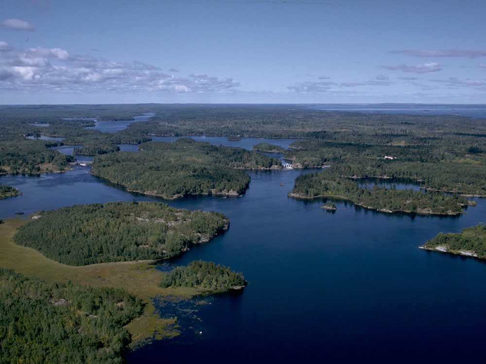

National park commemorating the voyageurs—French-Canadian fur traders who were the first European settlers to frequently travel through the area and is notable for its outstanding water resources, and is popular with canoeists, kayakers, other boaters, and fishermen.
General Information
Visitor center hours vary by season
Major visitor centers typically operate daily from 9:00am to 5:00pm during the summer season
No entrance pass required
Additional fees apply for camping reservations, houseboat permits, boat tours, special programs, and certain recreational rentals
How to Get There
From AmericInn by Wyndham International Falls (approximately 10 mi): Take MN-11 E from International Falls, continue east along Rainy Lake, and follow signs to the Rainy Lake Visitor Center, the primary year-round visitor center for Voyageurs National Park.
Overview
Voyageurs National Park in northern Minnesota protects a large water-based landscape of interconnected lakes, forested islands, and bogs along the border with Canada. Named for the French-Canadian fur traders who once paddled these waterways, the park covers about 218,000 acres, of which about 40 percent is water. Four major lakes, Rainy, Kabetogama, Namakan, and Sand Point, are linked with dozens of smaller ones, and the rocky shores, which are some of the oldest exposed rock on Earth, are covered by boreal forest. Unlike most national parks, Voyageurs is mainly explored by boat.
The park was established in 1975 after years of debate over how to protect the area while allowing for the use of its waters. Today people come to boat, fish, paddle, and camp on islands, to see wildlife such as loons, eagles, and wolves, and to stay in houseboats or at lakeside resorts. Winter brings ice roads, snowmobiling, and skiing, and the park's dark skies are among the best in the Midwest for stargazing and the northern lights.
Park Sections
The park has four main areas on the Minnesota side, each with its own visitor center and boat launch. Rainy Lake, near International Falls, is the largest lake in the park and the easiest to reach. Kabetogama Lake is in the center, with the Kabetogama Peninsula, a roadless wilderness reached by boat or trail. Ash River lies on the south shore of Namakan Lake, and Crane Lake is the western gateway. At the northeast end, Kettle Falls has a historic hotel and a dam at the Canadian border, reached by boat or a long hike. Only a few roads reach the park, and most visitors need a boat.
Sightseeing and Exploring the Park
Voyageurs has no scenic drive, and the best way to see it is by boat. In summer, rangers lead boat tours from the visitor centers, such as tours of Rainy Lake to Little American Island, the site of an 1890s gold rush, and trips to Kettle Falls Hotel, a 1910 resort still in operation. Visitors with their own boat can follow marked channels to islands and bays. A few places are reachable by road, including the Ellsworth Rock Gardens, with sculpted gardens and rock art on Lake Kabetogama, and overlooks near the visitor centers.
Hiking
The park has more than 50 miles of trails, many in the backcountry. Easy hikes near visitor centers include the Blind Ash Bay Trail (about 3 miles), the Ethno-Botanical Garden Trail (about 1 mile), the Echo Bay Trail, and the Oberholtzer Trail. The Kab-Ash Trail, a 28-mile route between Kabetogama and Ash River, is for backpackers, and the Cruiser Lake Trail crosses the Kabetogama Peninsula. Trails can be wet and rocky and are buggy in summer, so bring repellent. Some trailheads are reached only by boat.
Other Activities
Voyageurs is known for activities on the water. Houseboat rentals are available on Rainy and Kabetogama Lakes, allowing visitors to live on the water, and small motorboats, canoes, and kayaks can be rented from local outfitters. Fishing for walleye, northern pike, muskellunge, and smallmouth bass is a main draw, with a Minnesota license required. Other activities include camping on islands, ranger programs, stargazing, and swimming. In winter, a network of ice roads and trails supports snowmobiling, cross-country skiing, snowshoeing, and ice fishing, and the park is a certified International Dark Sky Park.
Flora and Wildlife
The park is part of the boreal forest, with white and red pine, spruce, fir, aspen, and birch, along with wetlands and bogs. Wildlife includes gray wolves, black bears, moose, white-tailed deer, beavers, otters, and more than 240 bird species. The call of the common loon is the sound most associated with the park, and bald eagles, ospreys, and white pelicans are common. Wolves and moose are rarely seen. Wildlife viewing is mostly from the water, and early morning and evening are the best times. Ranger-led boat tours sometimes point out wildlife.
Access
The park is in northern Minnesota along the Canadian border, with the Rainy Lake Visitor Center about 12 miles east of International Falls on Highway 11. Kabetogama and Ash River are reached from US-53 and county roads, and Crane Lake from County Road 24. Duluth is about 2.5 hours (165 miles) to the south, Minneapolis about 5 hours (300 miles), and Winnipeg, Manitoba, about 4 hours. Falls International Airport in International Falls has limited commercial service. There is no public transportation, and most of the park can be reached only by boat, which can be rented locally.
Seasons
The main season is from late May to September, when the lakes are open for boating, fishing, and houseboat trips; June and July can bring black flies and mosquitoes, and August is generally warm and pleasant. Fall brings colorful foliage in late September and fewer people, and the lakes begin to freeze in November. Winter, from about December to March, is the season of ice roads, snowmobiling, and skiing, with very cold temperatures. Spring is a quiet time as the ice goes out in late April or May. Many services close from October to May.
Camping and Lodging
The park has over 270 campsites for boat-in and canoe-in camping on lakeshores and islands, which require a permit, and a few drive-in campsites at the visitor centers. In the park, the historic Kettle Falls Hotel offers rooms and a restaurant in summer. Outside the park, resorts, lodges, and cabins line Rainy Lake, Kabetogama Lake, Ash River, and Crane Lake, and houseboats can be rented. International Falls has chain hotels and motels, including the AmericInn, and the nearby Woodenfrog State Forest Campground is a popular campground on Kabetogama Lake.
Visitor Centers
The park has four main visitor centers. The Rainy Lake Visitor Center, open year-round, is the main one, with exhibits, a film, a bookstore, and the starting point for ranger boat tours. The Kabetogama Lake Visitor Center is open in summer and some winter weekends. The Ash River Visitor Center is open in the summer season, and the Crane Lake Ranger Station is staffed seasonally. Hours vary by season, so check the National Park Service website.
This article uses material from the Wikipedia article "Voyageurs National Park", which is released under the Creative Commons Attribution-Share-Alike License 3.0. Additional information comes from the National Park Service Voyageurs National Park website.
Featured Trails

Ash River
Historic wilderness visitor center housed in a rustic log lodge featuring exhibits, lake views, hiking access, and information about one of America's great water-based national parks.
Blind Ash Bay Hiking Trail
Rocky forest loop trail featuring scenic overlooks, boreal woodland habitat, abundant birdlife, and panoramic views across a wilderness lake.
Bushyhead Island
Remote forested island known for historic gold-mining remains, scenic shoreline views, wildlife habitat, and opportunities for boat-based exploration.
Echo Bay Trail
Easy forest loop trail passing through wetlands, mixed woodlands, and rocky outcrops with opportunities for birdwatching and views of the northern wilderness.
Ellsworth Rock Gardens
Historic lakeside folk-art garden featuring terraced flower beds, handcrafted stone sculptures, and panoramic wilderness views created by a self-taught artist.
Ethno-Botanical Garden Trail
Short interpretive garden trail featuring native plants, Ojibwe cultural exhibits, reconstructed traditional structures, and scenic views overlooking Black Bay.
Hoist Bay
Historic lakeside destination preserving former logging camp remains and a restored resort complex with cabins, waterfront scenery, and interpretive exhibits.
Kab-Ash Trail
Extensive backcountry trail system traversing remote forests, wetlands, rocky ridges, and wilderness landscapes while connecting two historic lake communities.

Yinan Chen, Public Domain, via Wikimedia Commons; Image Size Adjusted

Kabetogama Lake
Large island-dotted wilderness lake offering exceptional boating, fishing, paddling, camping, wildlife viewing, and access to remote national park landscapes.
Kettle Falls
Historic waterway destination featuring a border-crossing dam, rich voyageur heritage, remote wilderness scenery, and one of the most significant travel corridors in the North Woods.
Kettle Falls Hotel
Remote historic wilderness lodge accessible only by water, offering lakeside accommodations, dining, and a unique glimpse into the region's logging and tourism heritage.
Little American Island
Historic island destination featuring preserved gold-mining remnants, interpretive exhibits, and a short accessible trail through a scenic wilderness setting.
North Canoe Voyage
Interactive ranger-led cultural program featuring a replica fur-trade canoe, hands-on paddling experience, and stories of the voyageurs who traveled the northern waterways.
Oberholtzer Trail
Easy nature trail winding through forests and wetlands with scenic overlooks that showcase the diverse landscapes and wildlife of the northern lake country.

Jeffkantor, CC BY-SA 4.0, via Wikimedia Commons; Image Size Adjusted

Rainy Lake
Expansive wilderness lake featuring hundreds of forested islands, rugged shorelines, exceptional boating opportunities, and direct access to remote national park landscapes.



